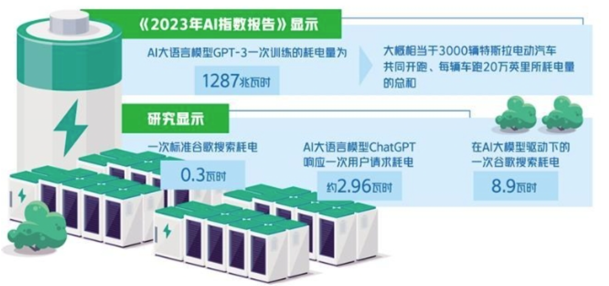
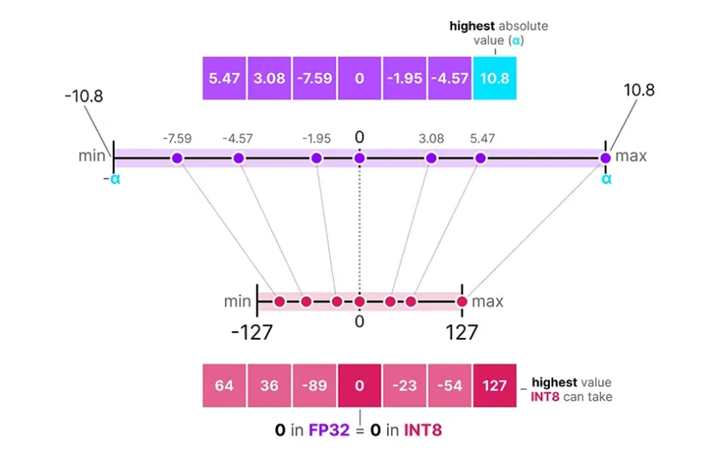
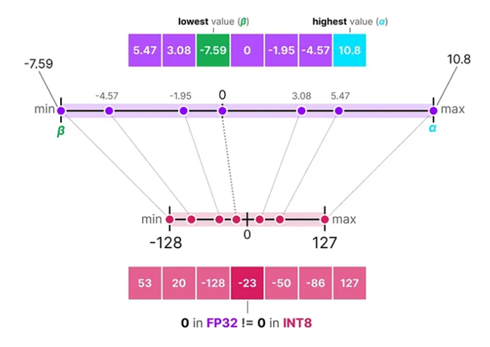
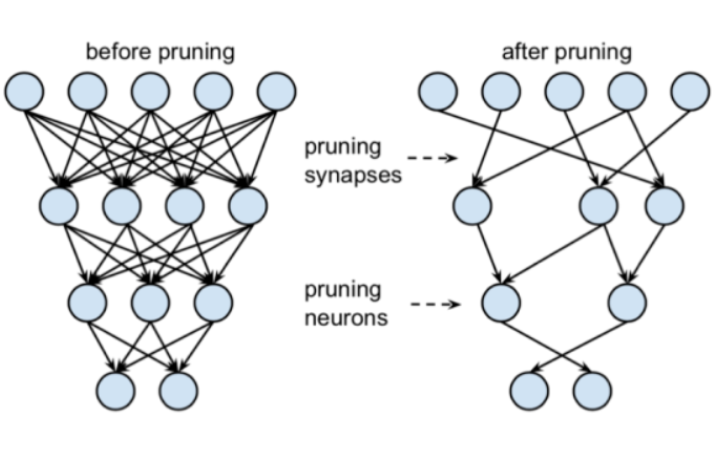
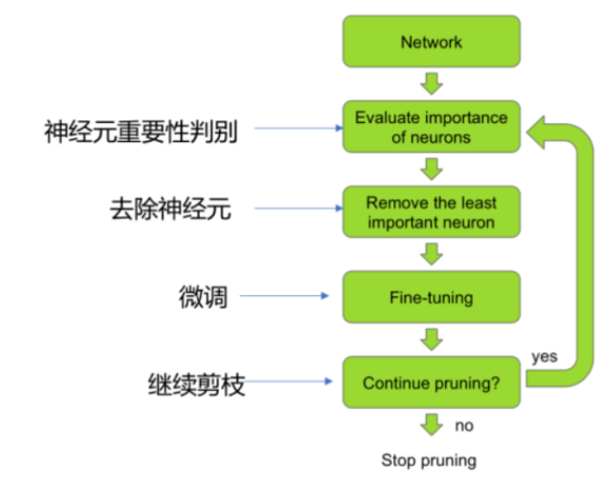
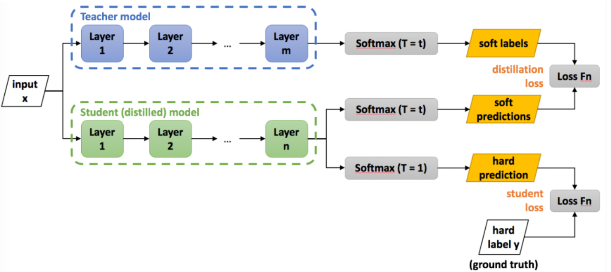
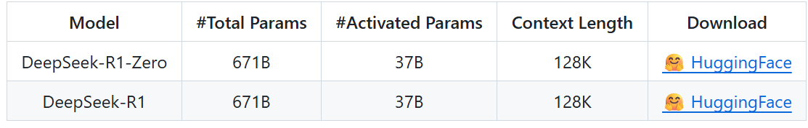
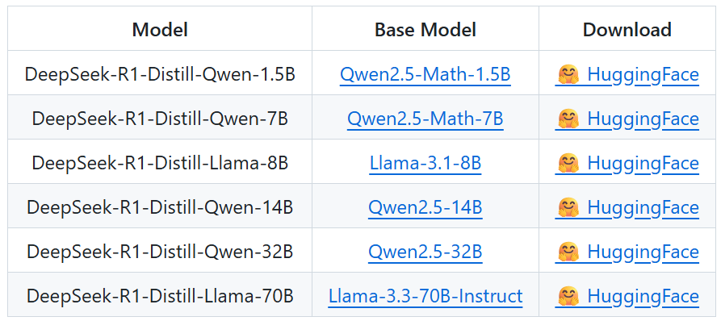

4.1 模型压缩¶
模型压缩的目标在尽可能保持模型性能的前提下，显著减少模型的大小、降低计算需求、提升推理速度。
1.模型压缩意义¶
尽管千亿、万亿参数级别的大模型展现出惊人的能力，但其部署和应用面临巨大瓶颈：
1. 硬件限制
动辄需要数百GB显存，远超绝大多数消费级和企业级显卡的容量。
| 模型参数量 | 估算显存需求 (使用AdamW) | 现实所需硬件 |
|---|---|---|
| 1B | ~20 GB | RTX 3090 / 4090 (24GB) |
| 7B | ~112-140 GB | 多张A100 (如 2×A100 80GB) |
| 13B | ~208-260 GB | 多张A100/H100 (如 4×A100 80GB) |
| 70B | ~1120-1400 GB | 需要一整个A100/H100节点 (如 8×或更多) |
2. 推理延迟
参数量的巨大导致每次推理都需要巨大的计算量，使得响应速度慢，难以满足实时应用（如对话、翻译）的需求。
| 模型大小 | 精度 | 硬件 | Time To First Token |
|---|---|---|---|
| 7B | FP16 | A100 (80GB) | 50 - 200 ms |
| 7B | INT4 | RTX 4090 | 100 - 300 ms |
| 13B | FP16 | A100 (80GB) | 100 - 400 ms |
| 70B | FP16 | 单卡 A100 | 500 - 2000 ms |
3.能耗与成本
运行大模型需要昂贵的GPU服务器和大量的电力，成本极高，难以规模化应用。

4.无法端侧部署
| 模型参数量 | FP16/BF16 需求 (估算) | 典型代表模型 |
|---|---|---|
| 7B | 14-16 GB | LLaMA-7B, ChatGLM-6B |
| 13B | 26-28 GB | LLaMA2-13B, Qwen-14B |
| 34B | 68-72 GB | Qwen-32B, Yi-34B |
| 70B | 140-146 GB | LLaMA2-70B, ChatGLM3-130B(*) |
手机、物联网设备等边缘设备的计算资源和内存极其有限，无法直接运行大模型。
2.模型压缩方法¶
对于一些较大的模型，往往需要通过一些模型压缩的技术，使其能满足不同计算硬件的要求。常见的模型压缩方法有：量化，剪枝和蒸馏。
| 技术 | 核心思想 | 主要优点 | 缺点 |
|---|---|---|---|
| 量化 | 降低数值精度（如FP32 -> INT8） | 效果显著，应用广泛，硬件支持好 | 极低精度下可能损失性能 |
| 剪枝 | 移除不重要的参数或结构 | 直接减少参数量和计算量 | 可能破坏模型结构，需要微调 |
| 知识蒸馏 | 大模型教小模型 | 能训练出原生的小而强模型 | 训练过程复杂，需要教师模型 |
在实际应用中，这些技术常常被组合使用，从而最大程度地在保持性能的同时，缩小模型体积、提升推理速度。
2.1 模型量化¶
模型量化是一种用于减少神经网络模型大小和计算量的技术，将模型参数（如：权重）从高精度数据类型（如：float32）转换为低精度数据类型（如：int8 或 int4）。模型量化通过以更少的位数表示数据，可以减少模型尺寸，进而减少在推理时的内存消耗，并且在一些低精度运算较快的处理器上可以增加推理速度，同时仍然可以保持模型的性能。
量化的本质是一个映射过程：将浮点数的范围 [α, β] 映射到整数的范围 [q_min, q_max] 。常用的量化方法包括 对称量化 （symmetric quantization）和 非对称量化 （asymmetric quantization），它们都是线性映射（linear mapping）的不同形式。
对称量化的核心思想是将浮点数量化为整数，且量化后的分布是关于零对称的。

下面是以量化为 Int8 类型举例的核心算法公式，量化为其他类型的整数公式类似：
计算 Scale : $$ \text{Scale} = \frac{|R_{\text{max}}|}{Q_{\text{max}}} $$
量化和反量化公式： $$ Q = \text{Round}\left(\frac{R}{\text{Scale}}\right) $$
- |Rmax|是原始浮点数范围内的最大绝对值。
- Qmax 是量化后整数的最大绝对值。
- R是要量化的浮点数。
- Q 是量化后的整数值，记得要向下取整，并且在 -127-127 （实际工程上一般舍弃 -128）范围内进行 clip ，控制不要使得量化后的值超出这个范围。
- R′ 是反量化后恢复的近似浮点值。
假如有一个浮点类型的输入 Xf矩阵，还有一个浮点类型的权重 Wf 矩阵，我们可以先对两个矩阵进行对称量化变成 Xq 和 Wq，这样就可以将两个浮点类型的矩阵的乘法，转换成两个整数类型的矩阵乘法，提升计算速度，代价就是计算出来的矩阵会出现由于对称量化造成的精度误差。公式如下，其中的两个 s 为两个矩阵的缩放系数: $$ X_f W_f = s_x * X_q @ s_w * W_q = s_x * s_w * (X_q @ W_q) $$
非对称量化并不是以零为中心对称的。 它将浮点数范围中的最小值（β）和最大值（α）映射到量化范围（quantized range）的最小值和最大值，充分利用量化后的整数范围。

常用的量化方法：
-
bitsandbytes ：一个专为深度学习模型量化优化设计的轻量级CUDA函数库，用于降低大型语言模型（LLM）的内存占用和计算成本，支持8位和4位量化技术。
-
GPTQ：一种高效的、逐层校准的 PTQ 方法。它通过对每一层的权重进行二次逼近，最小化量化误差，非常适合生成式大模型，能在 INT4 精度下保持良好性能。
- QLoRA：虽然不是纯粹的量化部署技术，但它将 QAT 的思想用于高效微调。它将预训练模型量化为 4位，然后通过可训练的低秩适配器进行微调，实现了在单张消费级显卡上微调超大模型（如 65B）的突破。
2.2 模型剪枝¶
模型剪枝是一种模型优化技术，可以使神经网络更小、计算效率更高。其核心思想是从训练好的模型中识别并删除冗余或不重要的参数（权重）或结构（神经元）。这个过程减少了模型的大小，并能显著加快推理速度，使其非常适合在内存和处理能力有限的边缘设备上部署。

剪枝的流程是“剪枝-微调-评估-再剪枝”的循环过程，如下图所示：

1.神经元重要性判别 ：评估网络中每一个神经元（或者通道、注意力头等结构化组件）对于模型最终输出的“重要性”或“贡献度”。得到一个所有神经元的重要性排名列表。
2.去除神经元 ：根据上一步的评估结果，移除最不重要的神经元。。
3. 微调 ：使用原始的训练数据或部分数据，对剪枝后的、更小的网络进行几个周期的训练。修复因剪枝而造成的模型性能（精度）下降。
4. 继续剪枝？ 如果还没有达到预设的目标（例如，参数减少50%，或FLOPs减少40%，或精度损失超过可接受阈值），则返回步骤1，开始下一轮迭代。如果已经达到了满意的压缩率和性能，则结束流程。
2.3 知识蒸馏¶
模型蒸馏（Model Distillation）是一种将大型、复杂模型（通常称为“教师模型”）的知识转移到小型、简单模型（通常称为“学生模型”）的技术。其核心思想是通过模仿教师模型的输出，使学生模型在保持较高性能的同时，显著减少模型的大小和计算复杂度。

1.准备教师模型：在一个大型数据集上训练一个高性能、高容量的大模型（如 BERT-Large, GPT-3）。此模型已收敛，性能优异。
2. 构建学生模型：
- 设计一个结构更小、参数更少的模型（如 BERT-Tiny, DistilBERT）。
- 学生模型的架构可以与教师相同（等比例缩小），也可以完全不同。
3.执行蒸馏训练：
- 对于同一批训练数据，让教师模型和学生模型分别进行前向传播。
- 教师模型使用高温度 T 产生软标签。
- 学生模型也使用相同的温度 T 产生软预测，同时也会产生硬预测（T=1）。
- 通过反向传播和优化器，只更新学生模型的参数。教师模型的参数是冻结的。
4.输出学生模型：训练完成后，得到一个独立的小型学生模型，用于部署。在推理时，温度 T 被重置为 1。
DeepSeekR1模型：

DeepSeekR1蒸馏的模型：

3.总结¶
1. 模型压缩的目标 ：在尽可能保持模型性能的前提下，显著减少模型的大小、降低计算需求、提升推理速度。
2. 模型压缩的意义
- 硬件限制
- 推理延迟
- 能耗与成本高
- 无法端侧部署
3. 模型压缩方法 ：量化、剪枝和蒸馏